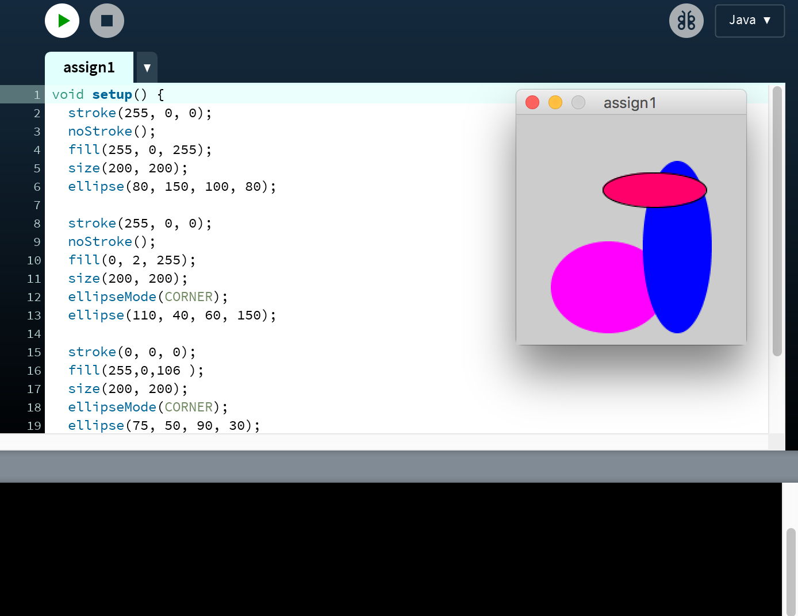
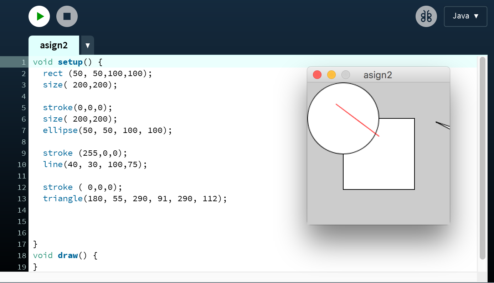
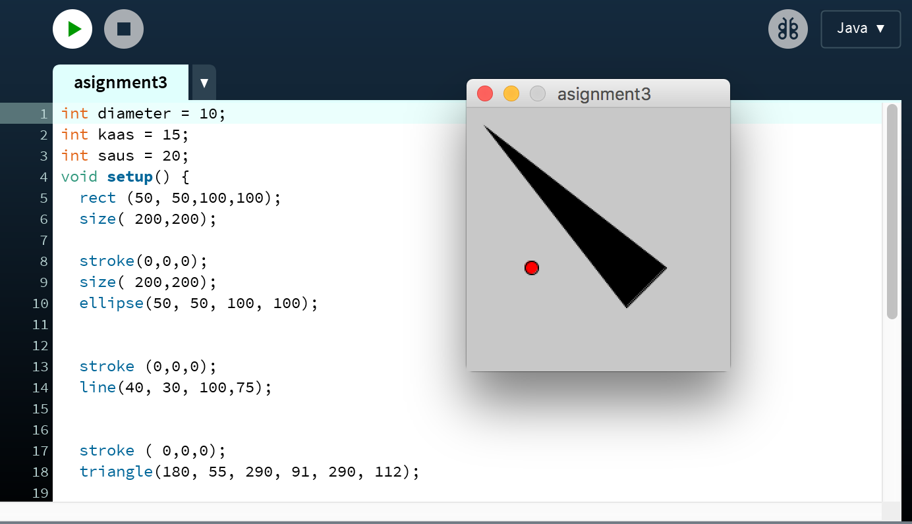
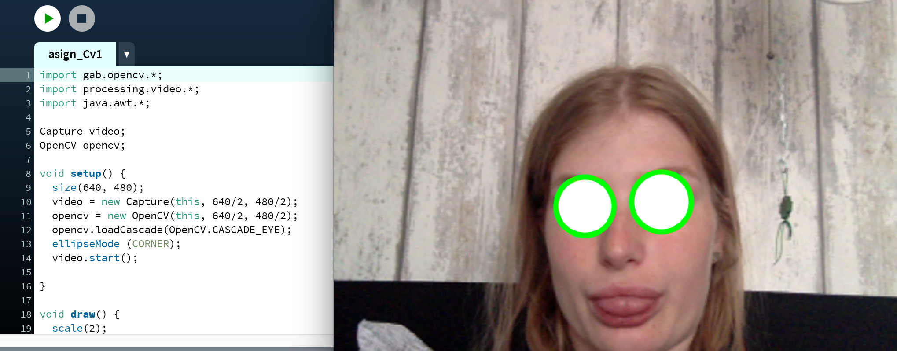
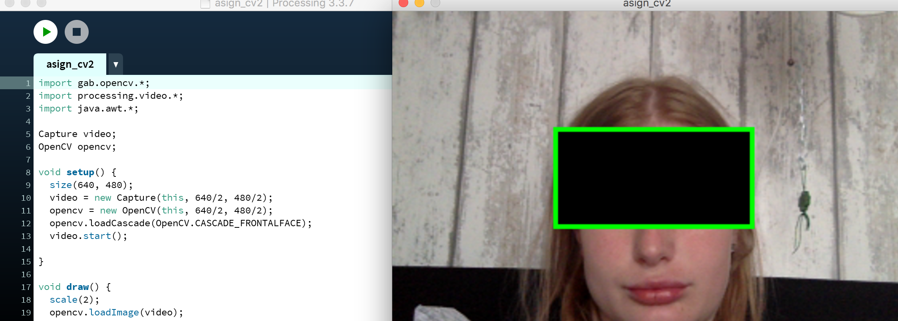
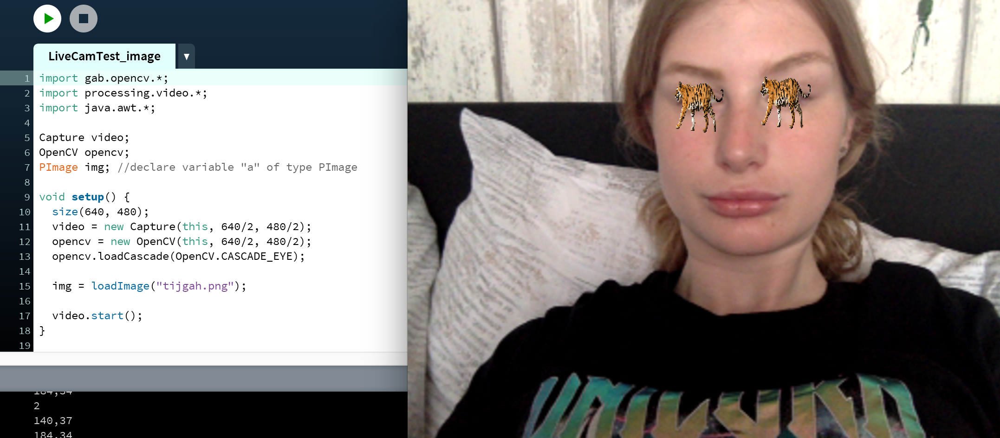

Workshop: Computer Vision
Voor HCI moesten we met het programma Processing een paar opdrachten maken. Processing is een een programma dat een persoon die momgelijkheid geeft om met interactieve afbeeldingen en animaties te werken. Eerst kregen we een paar oefeningen om vervolgens aan een assignment te beginnen.
Assignment 1
Het eerste assignment ging over het maken van vormen, kleuren en ze op de juiste plek zetten. Dit deden we op basis van verschillende kleuren, vormen en locaties.
Assignment 2
Vervolgens moesten we ene programma scshrijven die vier verschillende vormen gaf op verschillende locaties.
Assignment 3
Ook moesten we vormen maken die interactief waren. Mijn vormen zijn een driehoek en een cirkel in mijn favorieten kleuren die elkaar afstoten.
Assignment CV1
Daarna hebben we gebruik gemaakt van LiveCamTest dat gerbruik maakt van gezicht herkenning. Wij hebben de vormen gecombineerd met gezichtsherkkening en cirkels voor onze ogen weten te maken.
Assignment CV2
Naast rondjes hebben we uiteindelijk een 'anonymous' black bar gecreërt.
Assignment CV3
Als laatste hebben we inplaats van rondjes etc. een eigen plaatje geïmporteerd voor onze ogen met behulp van gezichtsherkenning.